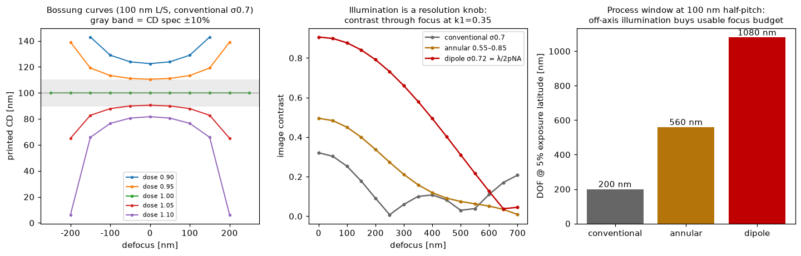
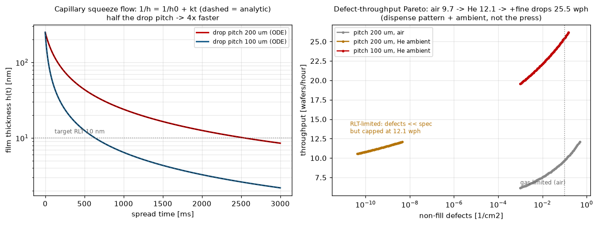

露光装置の設計判断を支配する2つの物理——投影結像のプロセスウィンドウ（KrF・FPA-6300ESクラス：λ248nm/NA0.86）と、ナノインプリント（NIL）の残膜流体力学——を第一原理から実装。回折次数和のAbbe結像（厳密デフォーカス位相）でBossung曲線→DOF×露光量裕度を出し、「照明はピッチに合わせて設計する解像度ノブ」を数値で示す。NIL側はスクイーズ流の閉形式解と閉ループ検証つき。既存のEUV転写性（Lasertec）・STOP解析（Sony）と合わせて結像スタック一式。
2値マスクの回折次数和によるAbbe部分コヒーレント結像（格子誤差ゼロ、光源点ごとに絶対瞳座標での厳密デフォーカス位相 exp(i2πz/λ·√(1−(λf)²))——軸外照明がDOFを買う交差項 2·fm·fx₀ を正しく保持）。しきい値レジストモデルはノミナルCDが焦点で印刷されるよう校正（リソの標準作法）し、Bossung曲線（焦点×露光量のCD面、無収差なら焦点対称——テストで検証）→プロセスウィンドウ（CD±10%を守る露光量帯域の通焦点重なり）。k1=0.35（100nm L/S）で照明を振ると：コントラスト0.32→0.50→0.91、DOF@5%EL 200→560→1080nm（従来σ0.7→輪帯→整合ダイポール σ=λ/2pNA=0.72）。閉ループ：コヒーレント遮断ピッチ λ/(NA(1+σ))=170nm以下でコントラスト消失、緩いピッチではCD=マスクCD（2%）。

NILは投影光学を接触に置き換える：インクジェット液滴がテンプレート下でスクイーズ流展開し、毛管圧 ΔP=2γcosθ/h が駆動する Stefan流 dh/dt=−4γcosθ·h²/(3ηR²) は閉形式 1/h=1/h₀+kt に積分できる（RK2数値解と<0.1%一致——テスト）。帰結：目標残膜厚（RLT 10nm）到達時間は ηR²/γ、つまり液滴ピッチ半減→4.0倍高速（数値検証も4.00）。ガス巻き込み欠陥は遅い溶解時定数 τ_gas で減衰し、He/凝縮性雰囲気がτを5×短縮。欠陥規格0.1個/cm²でのスループット：大気9.7 → He雰囲気12.1 → ＋液滴微細化25.5 wph——プレス機ではなく、吐出パターンと雰囲気の設計が効く。右図は律速の切り替わり（ガス律速→RLT律速）まで含むパレート。

関連（実装済み）：EUV結像・転写性ΔCD（マスク検査側）・STOP解析・波動光学MTF（レンズ側）・サブピクセル計測。出所：canon/{litho_imaging, nanoimprint}.py。